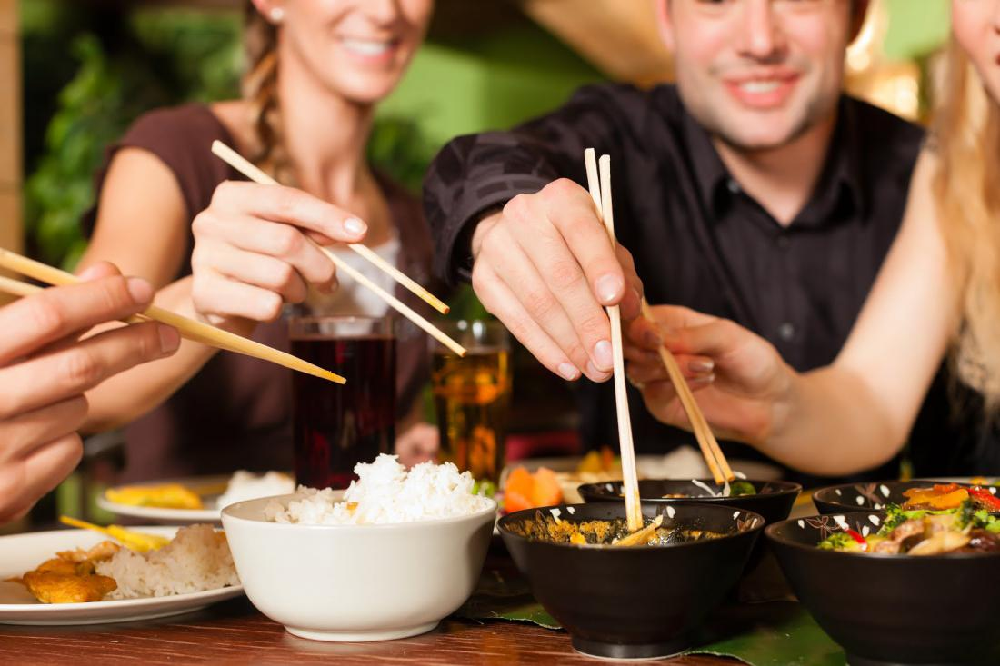

Немного о нас
Хотите насладиться вкусной едой? Мы получаем самые свежие продукты от надежных поставщиков и включаем их в наши эксклюзивные блюда. На наше меню влияют кулинарные традиции Европы, Дальнего Востока и других уголков мира.
